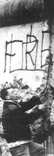

Online Exhibit → After the Soviet Union
Introduction: After the USSR

In 1985, a new, idealistic leader came to power in the Soviet Union. Mikhail Gorbachev was a great believer in the superiority of socialism and in the possibility to create a socialist system without the violence and repression of the earlier Soviet era. Seeking to animate Soviet society and to decisively end Soviet reliance on repression, Gorbachev called for openness about the dark sides of Soviet history. To his surprise, an unprecedented era of historical truth-telling about the history of the Gulag and Soviet repression undermined the legitimacy of the entire system—first in the Eastern European “satellites” and then in the Soviet Union itself. Unwilling to use violence to suppress the popular movements in these countries, Gorbachev had unwittingly begun a process that led to the collapse of first the Soviet empire and then the Soviet Union itself.
Online Exhibit | Reflections | Traveling Exhibit | Teacher Resources | About
© 2006–2021, Center for History and New Media, George Mason University.